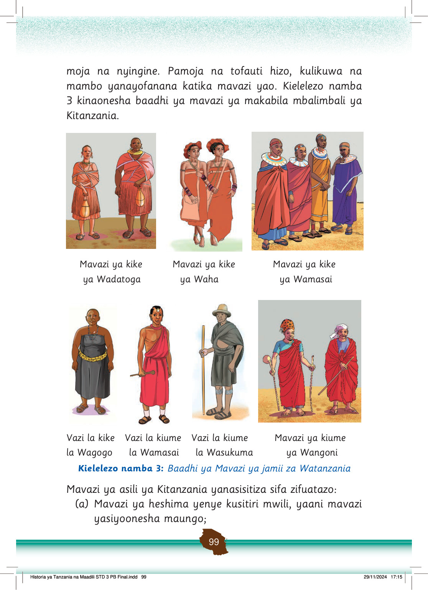

(b) Mavazi yanayoendana na mazingira na utamaduni wa jamii inayohusika;
(c) Mavazi nadhifu na yenye kupendeza; na
(d) Mavazi yanayoendana na shughuli inayohusika, kama vile sherehe, misiba na vita.
Tunao wajibu hivi sasa kama watoto wa kuendeleza mavazi ya asili.
Hivyo, ni vema kuepuka kuvaa mavazi yanayoonesha maungo ya mwili.
Tunapaswa kuvaa mavazi ya heshima na yenye kusitiri mwili.
Uvaaji wa nguo zenye kuonesha maungo ya mwili ni kinyume na maadili ya Kitanzania.
Kuvaa mavazi ya heshima kunajenga heshima kwa mtoto na jamii inayomzunguka.
Kazi ya kufanya namba 7
Kazi ya kufanya namba 7: Chunguza picha katika Kielelezo namba 3 na andaa onesho la mavazi ya asili ya aina mbalimbali.
Chunguza picha katika Kielelezo namba 3 na andaa onesho la mavazi ya asili ya aina mbalimbali.
Kazi ya kufanya namba 8
Kazi ya kufanya namba 8: Jadili na kueleza mambo uliyojifunza kuhusu mavazi ya asili ya jamii za Kitanzania na namna ya kuendeleza mavazi hayo kwa sasa.
Jadili na kueleza mambo uliyojifunza kuhusu mavazi ya asili ya jamii za Kitanzania na namna ya kuendeleza mavazi hayo kwa sasa.
Ngoma za asili
Ngoma za asili ni utamaduni wa Mtanzania.
Jamii zilicheza ngoma kwa mitindo tofauti kama kuruka, kutingisha viungo vya mwili, kuchezesha miguu, kuchezesha mabega na kadhalika, kama inavyoonekana katika Kielelezo namba 4.
Historia ya Tanzania na Maadili STD 3 PB Final.indd 100
29/11/2024 17:15